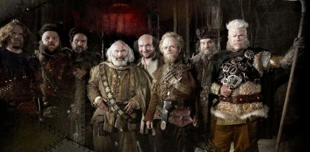

Décidément, la préquelle de Blanche Neige et le Chasseur s'éloigne de plus en plus de la première nommée !
En effet, après tout, qui dit absence de Blanche Neige dit absence des sept Nains... Non ? Nick Frost (Cuban Fury), Toby Jones (Captain America: The Winter Soldier) et Eddie Marsan (Sherlock Holmes: A Game Of Shadows) ne reviendront en tout cas pas et le script de cette préquelle centrée sur le personnage de Chris Hemsworth ne compte que deux Nains. Frost et Jones auraient pu être ces deux-là mais ne se sont visiblement pas mis d'accord avec la production.
Le long métrage est toujours attendu pour avril 2016, avec ce bon vieux Thor, Charlize Theron et peut-être Emily Blunt.